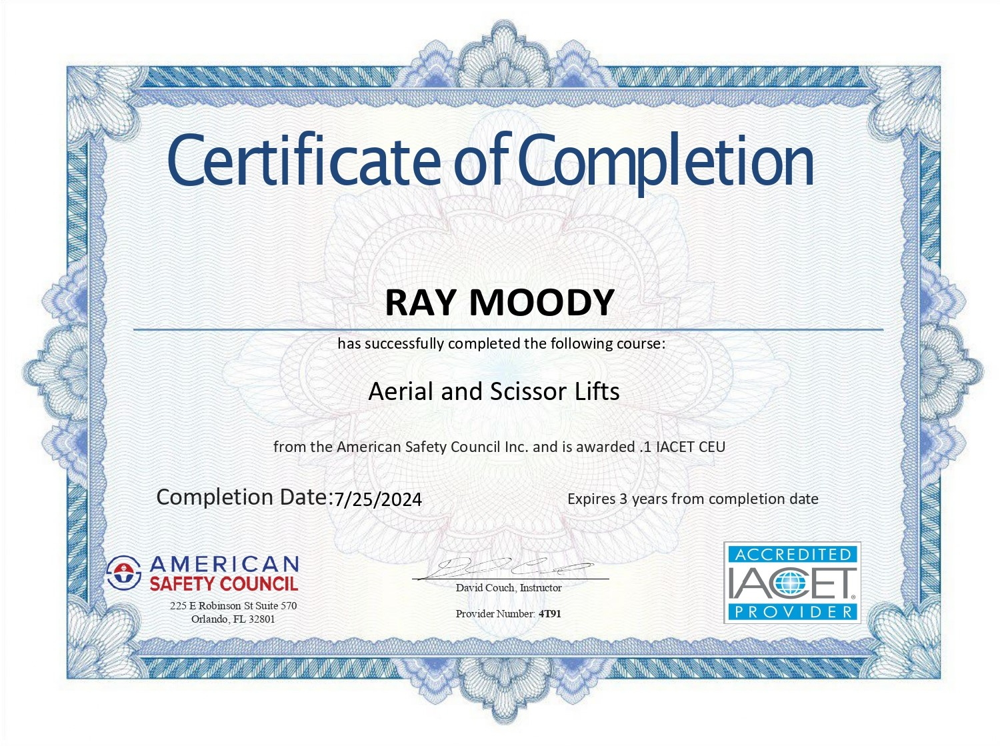

Resume Summary
Independent Smart Hands Field Technician with 4 years of experience developing Layer 1, structured cabling, and network troubleshooting expertise through hands-on project execution and direct mentorship with enterprise teams. Skilled in network troubleshooting, IP configuration, and task-driven field operations, consistently ensuring reliable first-visit connectivity restoration for enterprise environments and that project deliverables are completed to specification.
Certifications

2024/07 Aerial & Scissor Lift
 2022/06 OSHA Fall Protection
2022/06 OSHA Fall Protection
2022/06 Decostar Contractor Training
Experience
Independent Contractor (Layer 1 / Smart Hands)
Multiple Clients | 2022 - Present
- Completed bid-based assignments for national service providers, performing structured cabling surveys, installations, and end-to-end connectivity testing.
- Executed disciplined, task-driven network operations including device factory resets, static IP configuration, and switch port validation.
- Restored dozens of offline wireless access points through first-visit resolution by coordinating with remote NOCs, performing IP assignments, factory resets, and switch validation, accelerating cutovers and minimizing client downtime.
- Conducted structured cabling surveys and validated thousands of feet of CAT6 pathway installations, ensuring compliance with TIA/EIA standards.
Project Highlights
Remodel Infrastructure Installation Project
- Conducted site survey and produced as-built documentation for client handoff, enabling seamless Layer 2+ deployment.
- Performed rough-in Cat5/5e/6 cabling, termination, and labeling in compliance with TIA/EIA standards.
- Executed first-pass connectivity testing, static IP assignment, and switch port validation to verify operational readiness.
- Supported project sequencing to ensure efficient workflow, minimize downtime, and maintain adherence to project timelines.
- Delivered a fully documented, standards-compliant data center setup ready for operational deployment.
Edgeboot Extension Survey Project
- Conducted site survey and measured approximately 300 ft. of CMP-rated CAT6 cabling along a U-shaped pathway for Edgeboot network extension.
- Validated pathway compliance with TIA/EIA standards and alignment with client Statement of Work (SOW).
- Assessed materials and labor requirements, producing a detailed project quote for client approval.
- Documented cabling layout, pathway plan, and as-built diagrams for client handoff and readiness for subsequent deployment and cutover activities.